Welcome to my personal website : Shamser.info.np 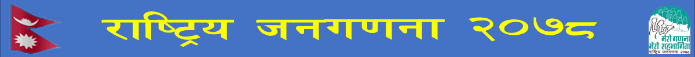
 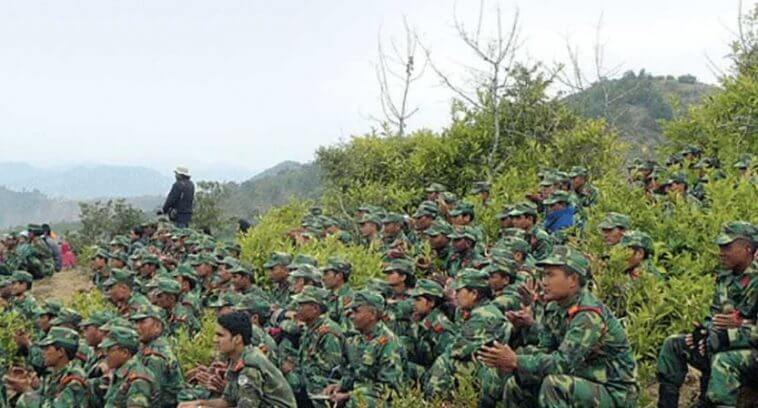
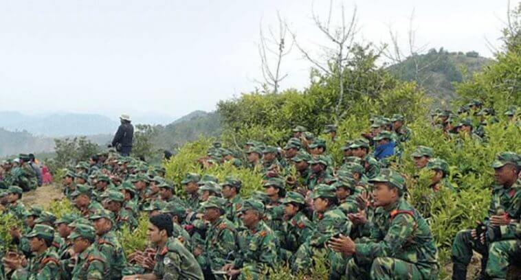
 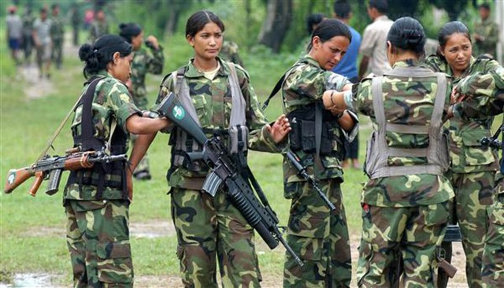
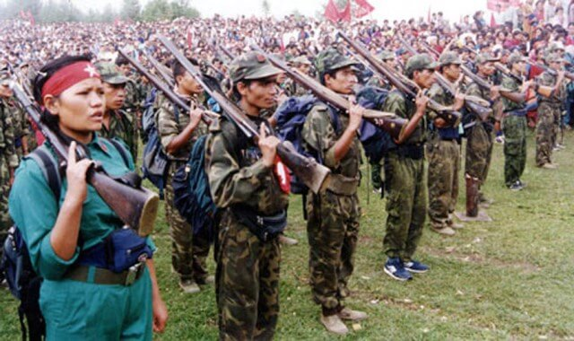
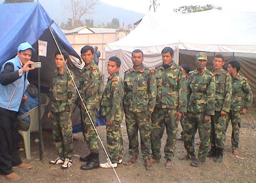
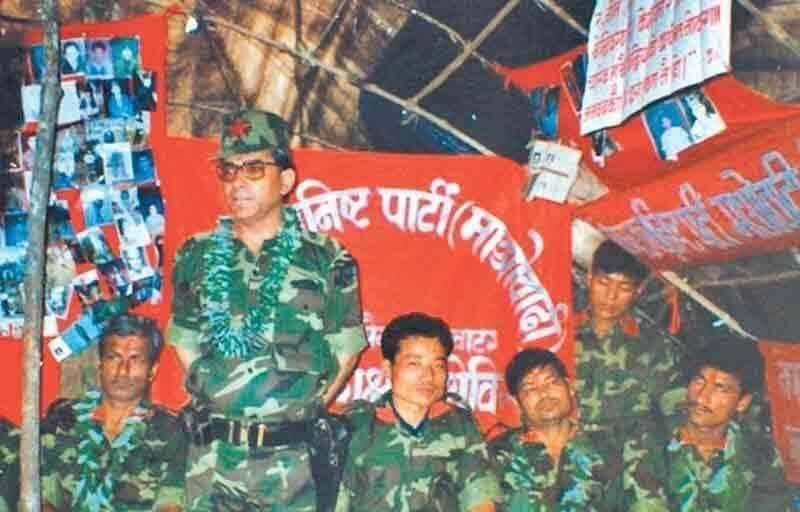
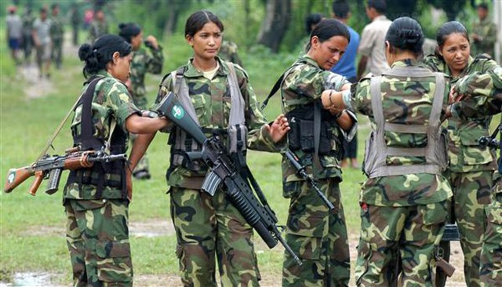
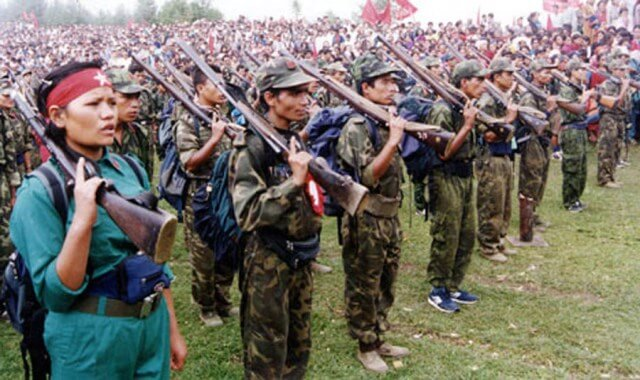
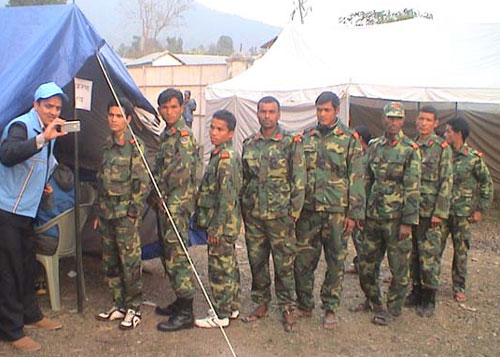
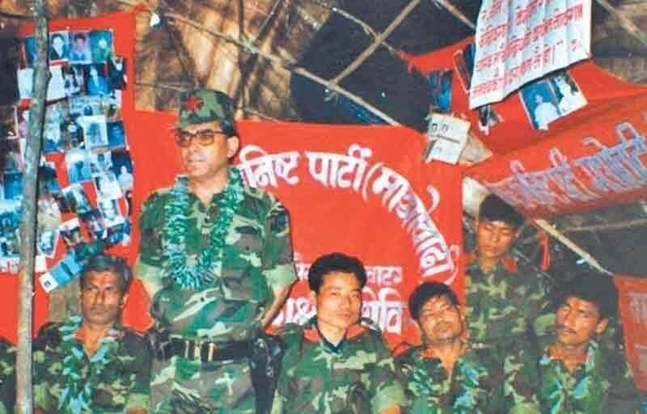
 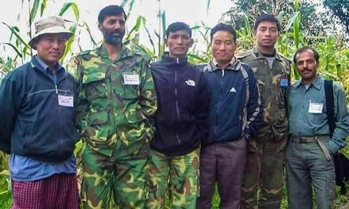
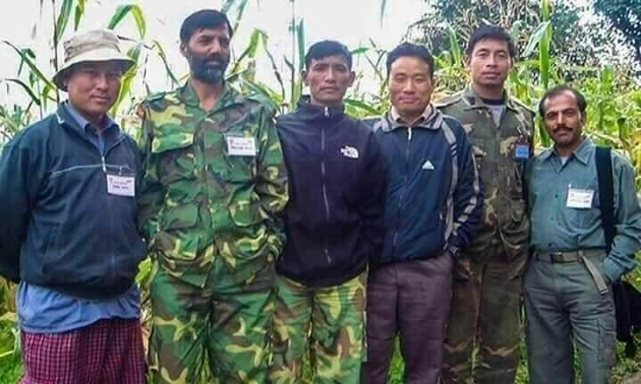
 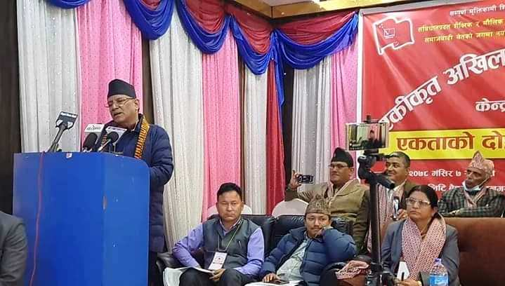
>
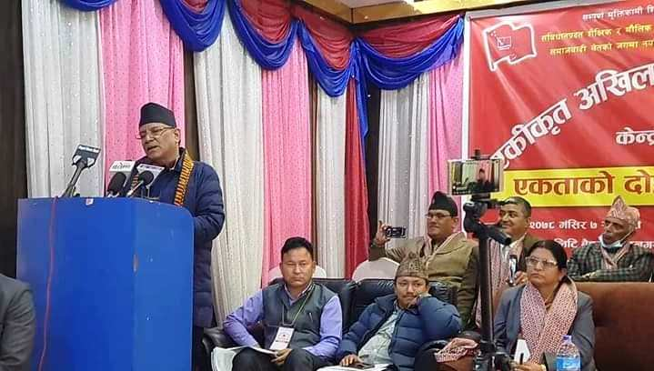
>


'जनमुक्ति सेना दिवस (जनयुद्धका मुख्य घटना)

खोज सङ्कलक -शमसेर पुलामी
UANTO केन्द्रिय कार्य समिति सदस्य तथा केन्द्रिय आइसिटी बिभाग सदस्य
shamser.info.np का लागि बिशेषाँक सामाग्री
काठमाडौं । मंसिर ८ गतेको दिन हो तत्कालिन नेकपा माओवादीले राज्य विरुद्धको सम्पूर्ण युद्ध अर्थात जनयुद्धका क्रममा सरकारको ससस्त्र फौज तत्कालिन शाही सेना विरुद्ध लड्नका लागि जमुक्ति सेना गठन गरेको दिन ।
त्यसयता शान्तिपूर्ण राजनीतिमा प्रवेश गर्नुअघि माओवादीले हरेक वर्ष जनमुक्ति सेना दिवस मनायो । कतिपय दिवसहरु फौजी आक्रमणकै रुपमा पनि मनाईए ।
शान्तिपूर्ण राजनीतिक जिवनमा प्रवेश गरेपछि पनि माओवादीले केही वर्ष यो दिवस भव्य रुपमै मनायो । तर आज २७ औं जनमुक्ति सेना दिवसको दिन सम्म पुग्दा यो दिवस माओवादीको समेत लगभग विस्मृतीमा पुग्यो भन्दा फरक पर्दैन । तत्कालिन एकिकृत माओवादी र नेकपा एमालेको एकतापछि औपचारिक कार्यक्रम आयोजना हुन छोडेको थियो । तर अहिले ती पार्टी पूर्ववत अवस्थामा फर्किएपनि यो समाचार तयार गर्दा सम्म माओवादीले पूर्व जनमुक्तिसेना दिवसको सन्दर्भमा कुनै कार्यक्रम वा विज्ञप्ती जारी गरेको छैन ।
अध्यक्ष तथा जनसेनाका सुप्रिम कमाण्डर प्रचण्डले सामाजिक सन्जालमा पनि यो दिनको सम्झाना गरेका छैनन् । तत्कालिन ४ डेपुटी कमाण्डहरु तथा कमिसारहरुले पनि यो दिवसको सम्झना गरेका छैनन् ।
तत्कालीन अवस्थामा जनमुक्ति सेनाका सर्बोच्च कमाण्डर प्रचण्ड थिए भने वर्षमान पुन अनन्त, नन्दकिशोर पुन पासाङ, जनार्दन शर्मा, प्रभाकर र चक्रपाणी खनाल, बलदेव डेपुटी कमाण्डर थिए । त्यस्तै सात डिभिजन कमाण्डरमा पहिलो डिभिजनमा सन्तु दराई परवाना, २ नम्बरमा धनबहादुर मास्की राजेश, तेश्रो कालीबहादुर खाम विविध, चौथोमा, यमबहादुर अधिकारी प्रतिक्षा, पाँचौमा, सुकबहादुर रोका शरद, छैटौंमा महेन्द्रबहादुर शाही प्रज्वल र सातौं डिभिजनमा जिवन बुढा रहेका थिए ।
माओवादी केन्द्रका स्थायी समिति सदस्य तथा तत्कालिन डेपुटी कमाण्डर वर्षमान पुन अहिले उपचारको सिलसिलामा बैंककमा छन् । जण्डिस रोगले सताएका कारण केही महिना यता उनको बैंकक स्थित समितिभेज अस्पतालमा उपचार भईरहेको छ तर निको भईसकेको छैन । आफैं यो अवस्थामा भएकाले उनले यो दिवसलाई सम्झिएका छैनन् । उनी विरामी भएयता उनको सामाजिक सन्जाल अपडेट छैन ।
अहिलेका उपराष्ट्रपति तथा तत्कालिन जनसेनाका डेपुटी कमाण्डर मध्येका एक नन्दबहादुर पुन हुन् । प्रायः सामान्य दिवस, चाडपर्व तथा सन्दर्भहरुमा समेत विज्ञप्ती जारी गर्दै सम्झने पुनको समेत यसपाली जनसेना दिवस विस्मृतिमा पुग्यो ।
अर्का डेपुटी कमाण्डर हुन अहिलेका अर्थमन्त्री जनार्दन शर्मा । उनले पनि आफ्ना ससाना गतिविधिसमेत सामाजिक सन्जालमा शेयर गर्ने गरेका छन् । तर उनको स्मृतिमा पनि जनमुक्ति सेना दिवस पर्न सकेको छैन ।
चौथो डेपुटी कमाण्डल चन्द्रप्रकाश खनाल माओवादीको केन्द्रीय राजनीतिमा छन् तर जनसेना दिवस सम्झनेमा उनी समेत परेका छैनन् ।
डेपुटी कमाण्डरहरु मात्रै हैन, कमिसारहरु र माओवादीको अन्य केन्द्रीय तहका नेताले समेत नेपाली राजनीतिको प्रलयकारी इतिहास बोकेको र नेपाली गणतन्त्रको एउटा बलियो मेरुदण्ड जनमुक्ति सेना स्थपनाको दिन सम्झिएका छैनन् ।
सत्ता बन्दुकको नालबाट जम्मन्छ भन्ने चिनियँ नेता माओवादी चर्चित भनाईबाट परिचालित भएर तत्कालिन माओवादीले राज्य विरुद्ध २०५२ साल फागुन १ गतेदेखि सशस्त्र युद्ध सुरु गरेको थियो ।
रोल्पाको होलेरी, रुकुमको आठबीसकोट, सिन्धुलीको सिन्धुलीगढीमा रहेका चौकीहरू र गोरखाको च्याङ्लीमा रहेको कृषि विकास बैंक कब्जा गरी माओवादीले जनयुद्धको सुरु भएको घोषणा गरेको थियो ।
१० वर्षसम्म चलेको जनयुद्धमा सरकार र माओवादी दुवैतर्फबाट १७ हजार जनाको मृत्यु भएको थियो भने कयौं बेपत्ता र अंगभंग भएका छन् । जनयुद्धको क्रममा माओवादीले आफ्नै सेना निर्माण गरेको थियो । माओवादीले आफूहरुसँग ३२ हजार सेना रहेको दाबी गर्दथ्यो । यद्यपि सेना समायोजनको क्रममा संयुक्त राष्ट्रसंघीय मिसन अनमिनले १९ हजार ६०२ जना जनसेना प्रमाणीकरण ग¥यो ।
तीमध्ये समायोजनको क्रममा दिइएको विकल्पअनुसार १५ हजार ६३० जनाले स्वेच्छिक अवकाश रोजेर घर फर्किए । प्रमाणीकरणको क्रममा झण्डै चार हजार जना अयोग्य ठहरिए । १ हजार ४ सय २१ जना जना भने नेपाली सेनाका बिभिन्न पदमा समायोजन भए ।
जनयुद्धको सुरुवातदेखि गणतन्त्र स्थापनासम्मका मुख्य घटना:
२०५२ साल
फागुन १ : नेकपा माओवादीद्वारा ‘प्रतिक्रियावादी राज्यसत्तालाई ध्वंस गर्दै नयाँ जनवादी सत्ताको स्थापना गर्न जनयुद्धको बाटोमा अघि बढौँ !’ भन्ने मूल नाराका साथ जनयुद्धको सुरुआत । रोल्पाको होलेरी, रुकुमको आठबीसकोट, सिन्धुलीको सिन्धुलीगढीमा रहेका चौकीहरू र गोरखाको च्याङ्लीमा रहेको कृषि विकास बैङ्क कब्जा ।
फागुन ६ : नेकपा माओवादीका महामन्त्री क. प्रचण्डद्वारा एक प्रेस वक्तव्यमार्फत् ती कार्बाहीहरूको जिम्मेवारी स्वीकार ।
फागुन १४ : गोरखामा प्रहरीद्वारा १४ वर्षीय दिलबहादुर रम्तेलको गोली हानी हत्या ।
फागुन १५ : रुकुमको पीपलमा छजना खत्री बन्धुहरूको प्रहरीद्वारा हत्या ।
२०५३ साल
असार : माओवादीको केन्द्रीय समितिको बैठकद्वारा ‘योजनाबद्ध ढङ्गले छापामार युद्धको विकास गरौँ !’ भन्ने मूल नारासहित जनयुद्धको विकासको दोस्रो योजना सुरु ।
वैशाख २४ : रुकुमको तकसेरामा प्रहरीविरुद्ध पहिलो सफल एम्बुस । दुई प्रहरीको मृत्यु र दुईवटा राइफल कब्जा ।
पुस १९ : रामेछापको बेथानमा रहेको प्रहरी चौकी कब्जा । जनयुद्ध सुरुआतपछि प्रहरी चौकी कब्जाको यो पहिलो घटना । आक्रमणको क्रममा सो कार्बाहीका कमान्डर तीर्थ गौतम, महिला छापामार दिल माया योञ्जनसहित तीन छापामारको मृत्यु ।
२०५४ साल
असार : माओवादीको केन्द्रीय समितिको बैठकले ‘छापामार युद्धलाई विकासको अर्को नयाँ उचाइमा उठाऔं !’ भन्ने मूल नारासहितको तेस्रो योजना पारित ।
भदौ : तनहुँको कालिकाटारमा प्रहरी गस्ती माथि छापामारहरूद्वारा आक्रमण र हतियार कब्जा ।
माघ २२ : धादिङको खहरेमा एम्बुस । दुई राइफल र नेपाल बैङ्क लिमिटेडको बीस लाख रुपियाँ कब्जा ।
फागुन २४ : रोल्पाको कोर्चावाङ निम्रीमा प्रहरी विरुद्ध एम्बुस । दुई प्रहरीको मृत्यु र दुईवटा राइफल कब्जा ।
चैत ४ : गोरखाको सौरपानीमा एम्बुस । तीन प्रहरीको मृत्यु र एक राइफल कब्जा ।
२०५५ साल
वैशाख : तत्कालीन नेपाली काङ्ग्रेसको सरकारले ‘सबैलाई मार, सबै चीज जलाऊ र सबै चीज लूट’ को किलो शेरा टू नामक क्रूर अपरेसन सञ्चालन । प्रहरीद्वारा यो अपरेसनको क्रममा पाँचसय जनताको हत्या ।
भदौ : नेकपा माओवादीको केन्द्रीय समितिको चौथो विस्तारित बैठक सम्पन्न । ‘आधार इलाका निर्माणको दिशामा अघि बढौँ !’ भने मूल नारा तय ।
कात्तिक १० : छापामारहरूले सल्यानको झिम्पे टावर सुरक्षार्थ रहेको प्रहरी चौकी कब्जा । पूर्वमा काभ्रेको फलाँटेमा दिउँसै प्रहरी चौकी कब्जा । सोही दिन पर्साको निर्मलवस्ती र धनुषाको ललियामा रहेका चौकीहरू कब्जा ।
पुस १८ : २०५३ पुस १९ गतेको बेथान कार्बाहीको वीरताको निरन्तरताको क्रममा ललितपुरको भट्टेडाँडा चौकी छापामारहरूद्वारा सम्पूर्ण हतियारसहित कब्जा । सोही घटनाको सचित्र समाचार प्रकाशन गरेवापत जनादेश कार्यालयमा आक्रमण । कम्प्युटरलगायत प्रेस सामग्रीमाथि लुटपाट, कार्यालय तालाबन्दी र जनादेशका तत्कालीन सल्लाहकार शक्ति लम्सालसहित सहकर्मीहरू गिरफ्तार ।
फागुन १९ : दाङको चिराघाट प्रहरी चौकी कब्जा ।
चैत ५ : काभ्रेको अनेकोटमा सेल्टर लिइरहेका सातजना कलाकारहरूको प्रहरीले आगो लगाएर र गोली प्रहार गरी हत्या । सो बलिदानी दिनको सम्मानमा चैत ५ लाई सांस्कृतिक प्रतिरोध दिवस मनाइने गरेको ।
वैशाख १९ : रोल्पाको जेलवाङमा रहेको दङ्गा प्रहरी बेस क्याम्प कब्जा ।
जेठ ६ : नेकपा माओवादीका केन्द्रीय सदस्य दीपेन्द्र शर्मा, जनादेशका प्रबन्ध सम्पादक मिलन नेपाली, पूर्वका छापामार प्लाटुन कमान्डर नवीन गौतम र कमला शर्मालगायतलाई गिरफ्तार गरी बेपत्ता । त्यसबेलादेखि सरकारले नागरिक बेपत्ता पार्न सुरु गर्यो ।
जेठ ३१ : जाजरकोट लहँमा रहेको दङ्गा बेसक्याम्प कब्जा ।
भदौ २३ : नेकपा माओवादीका वैकल्पिक पोलिटब्युरो सदस्य सुरेश वाग्ले ‘क. वासु’ को गोरखामा गिरफ्तारपछि हत्या ।
असोज ५ : रुकुमको महतमा रहेको दङ्गा बेसक्याम्प कब्जा । छापामारद्वारा डीएसपी ठूले राई कब्जा ।
फागुन ६ : रोल्पाको घर्तीगाउँ दङ्गा इप्रका कब्जा । यसपछि प्रहरीहरू केन्द्रीकृत ।
चैत २१ : रुकुमको तकसेरामा रहेको दङ्गा इप्रका कब्जा ।
चैत अन्त्य : गोरखाको हर्मी प्रहरी चौकी कब्जा ।
२०५७ साल
असार १९ : जाजरकोटको पाँचकटिया दङ्गा इप्रका कब्जा ।
भदौ ७ : नवलपरासीको धवाडी इप्रका कब्जा ।
भदौ १४ : झापा महवारी इप्रका कब्जा ।
असोज ८ : पहिलो पटक सदरमुकाममाथि आक्रमण । डोल्पा सदरमुकाम दुनैका सम्पूर्ण प्रहरी चौकीहरू र बैङ्क कब्जा ।
असोज १० : लमजुङको भोर्लेटारमा इलाका प्रहरी कब्जा ।
कात्तिक २० : रामेछापको दोरम्बा प्रहरी चौकी कब्जा ।
पुस ५ : नेपालको इतिहासमा पहिलोपल्ट जिल्ला जनसरकारको घोषणा । पूर्णबहादुर घर्ती रुकुम जिल्ला जनसरकार प्रमुख ।
फागुन : नेकपा माओवादीको दोस्रो राष्ट्रिय सम्मेलन सम्पन्न । प्रचण्डपथ पारित । अध्यक्षमा प्रचण्ड निर्वाचित । दक्षिण एसियाली फेडेरेसनको अवधारणा पारित । ‘आधार इलाका र स्थानीय सत्ता सुदृढ र विस्तार गरौँ ! केन्द्रीय जनसरकार निर्माणको दिशामा अघि बढौँ!’ भन्ने मूल नारा तय ।
चैत १७ : गोरखाका ६ महिला बन्दीहरूद्वारा जेलब्रेक ।
चैत १९ : रुकुमको रुकुमकोटमा रहेको दङ्गाको क्याम्प, दैलेखको नौमुलेमा रहेको प्रहरी क्याम्प र दोलखाको मैनापोखरीमा रहेको इप्रका कब्जा ।
२०५८ साल
जेठ ८ : ओखलढुङ्गाको खानीभञ्याङ इप्रका कब्जा ।
जेठ १९ : दरबार हत्याकाण्ड, राजा वीरेन्द्रको वंशनास ।
जेठ २० : माओवादी अध्यक्ष प्रचण्डद्वारा राजतन्त्रको अन्त्य भएको घोषणा गर्दै गणतन्त्रको संस्थागत विकासका लागि जोड ।
जेठ २२ : ज्ञानेन्द्रद्वारा आफैँलाई राजा घोषणा ।
असार २५ : लमजुङको विचौर प्रहरी चौकी कब्जा ।
असार २८ : रोल्पाको होलेरी चौकीमाथि आक्रमण गरी ६९ प्रहरी कब्जा । शाहीसेना परिचालनको प्रयास ।
असार ३० : रामेछापको धोवीडाँडा प्रहरी चौकी कब्जा ।
साउन ६ : तेह्रथुमको पोक्लावाङस्थित प्रहरी चौकी कब्जा ।
साउन ७ : बाजुराको पाण्डुसेनमा रहेको प्रहरी चौकी कब्जा ।
साउन ४ : माओवादीविरुद्ध सेना परिचालनको विवादका कारण गिरिजा सरकारको पतन । देउवा सरकार गठन ।
साउन ८ : सरकारद्वारा युद्धविरामको घोषणा । त्यसको लगत्तै माओवादीद्वारा युद्ध विरामको सकारात्मक प्रत्युत्तर ।
साउन १२ : कृष्णबहादुर महराको नेतृत्वमा अग्नि सापकोटा र टोपबहादुर रायमाझी रहेको तीन सदस्यीय माओवादी वार्ता टोली सार्वजनिक । १४ गते पहिलो चरणको वार्ता गोदावरीमा । २८-२९ गते दोस्रो चरणको वार्ता बर्दियाको ठाकुरद्वारमा ।
साउन ३१ : विभिन्न राजनीतिक दल र माओवादीबीच भारतको सिलगुडीमा वार्ता ।
कात्तिक २८ : तेस्रो चरणको वार्ता पुनः गोदावरीमा सम्पन्न ।
मङ्सिर ६ : माओवादी अध्यक्षद्वारा सरकारले वार्ता र अग्रगामी राजनीतिक निकासको ढोका बन्द गरेको जनाउँदै सचेत रहन जनसमुदायमा आग्रह ।
मङ्सिर ८ : जनमुक्ति सेना, नेपालको घोषणा, सर्वोच्च कमान्डर प्रचण्ड । सोही दिन संयुक्त क्रान्तिकारी जनपरिषद्, नेपालको घोषणा । बाबुराम भट्टराईको नेतृत्वमा ४१ सदस्यीय समिति सार्वजनिक ।
मङ्सिर १० : पूर्वमा जनसेनाद्वारा सोलु सदरमुकाम सल्लेरी कब्जा, सिडिओसहित १३७ शाही सुरक्षाकर्मीको मृत्यु ।
मङ्सिर ११ : देउवा सरकारद्वारा सङ्कटकालको घोषणा । शाहीसेनाको औपचारिक परिचालन । जनादेश साप्ताहिक र जनदिशा दैनिकका कार्यालयमा छापा मारेर ११ जना पत्रकार गिरफ्तार ।
मङ्सिर २२ : शाहीसेना र प्रहरीको हत्या, गिरफ्तारी र राज्य आतङ्कविरुद्ध नेकपा माओवादीद्वारा नेपाल बन्द ।
फागुन ४ : जनसेनाद्वारा अछाम सदरमुकाम र साँफेबगर एयरपोर्ट कब्जा । भिडन्तमा ५५ शाहीसेना र १५० प्रहरीको मृत्यु ।
२०५९ साल
वैशाख १९ : रोल्पाको लिस्ने लेकमा शाहीसेनासँग जनसेनाको दिउँसै भिडन्त । जनसेनाद्वारा बलियो अमेरिकी फोर्टिफिकेसनसहित बनाइएको गाम संयुक्त शाही सुरक्षा बेसक्याम्प कब्जा ।
जेठ ८ : देउवाद्वारा मध्यरातमा संसद विघटन । मध्यावधि निर्वाचनका लागि कात्तिक २७ गते निर्धारण ।
जेठ १३ : जेठ ६ गते गिरफ्तार गरिएका जनादेशका पूर्वसम्पादक कृष्ण सेन ‘इच्छुक’ को हिरासतमै कुटीकुटी हत्या ।
असार २ : माओवादी केन्द्रीय सदस्य रीतबहादुर खड्काको रौतहटमा हत्या । भारतीय शासकद्वारा अखिल भारत नेपाली एकता समाजलाई पोटा ।
असार २८ : भारतीय शासकले दिल्लीबाट असार २७ गते गिरफ्तार गरिएका पत्रकार महेश्वर दाहाल, पार्थ क्षेत्रीसहित चारजनालाई व्यापक विरोधका बाबजुद पहिलोपटक औपचारिक सुपुर्दगी ।
भदौ २३ : अर्घाखाँचीको सदरमुकाम सन्धिखर्क र सिन्धुलीको भिमानमा रहेको इप्रका कब्जा ।
असोज १७ : संसदवादी दलहरूद्वारा चुनाव एक वर्षपछि सार्न राजासमक्ष विन्ती ।
असोज १८ : ज्ञानेन्द्रद्वारा देउवा सरकार विघटन । कार्यकारिणी अधिकार कब्जा ।
कात्तिक २८ : कर्णाली अञ्चल सदरमुकाम जुम्ला खलङ्गा कब्जा ।
मङ्सिर १८ : लाहानमा रहेको इप्रका र बैङ्क कब्जा ।
माघ १२ : सशस्त्र प्रहरी महानिरीक्षक कृष्णमोहन श्रेष्ठ र पत्नी नुडुपको माओवादीद्वारा ललितपुरमा हत्या ।
माघ १५ : सरकार र माओवादी दुवै पक्षबाट युद्धविरामको घोषणा ।
माघ १८ : बाबुराम भट्टराईको नेतृत्वमा रामबहादुर थापा, कृष्णबहादुर महरा, देव गुरुङ र मातृका यादव रहेको पाँच सदस्यीय माओवादी वार्ता टोलीको घोषणा ।
माघ २९ : युद्धविराम आचार संहिता जारी ।
चैत १५ : राजधानीमा पत्रकार सम्मेलन गरी माओवादी वार्ता टोली सार्वजनिक ।
चैत २० : काठमाडौँको खुलामन्चमा माओवादीको विशाल आमसभा । वार्ता टोलीका सदस्यहरूद्वारा सम्बोधन ।
२०६० साल
वैशाख १४ : दोस्रो युद्धविरामको पहिलो चरणको वार्ता काठमाडौँको शङ्कर होटलमा । २७ गते सोही ठाउँमा दोस्रो चरणको वार्ता ।
साउन ३२ : सरकार र माओवादीबीच तेस्रो चरणको वार्ता दाङको हापुरेमा । सोही दिन रामेछापको दोरम्बामा शाही सेनाद्वारा जिल्ला जनसरकार प्रमुख बाबुराम तामाङसहित २० जना माओवादी कार्यकर्ता र एक स्थानीयको हत्या । शाहीसेनालाई ब्यारेकबाट पाँच किमिभन्दा बाहिर ननिस्कन भएको सहमति तोडिएकाले वार्ता प्रभावित ।
भदौ १० : नेकपा माओवादीद्वारा युद्धविराम र वार्ता भङ्गको घोषणा । देशव्यापी प्रतिरोध कार्बाही सुरु । काठमाडौँमा जनसेनाद्वारा शाहीसेनाको कर्नेल किरण बस्नेतको हत्या
कात्तिक १० : गोरखाको च्याङ्लीमा माओवादीले थापेको एम्बुसमा परी प्रहरी एसपी सूर्यकुमार श्रेष्ठसहित चारको मृत्यु ।
कात्तिक ११ : पोखरा नजिकैको डाँडानाकामा रहेको संयुक्त चेकपोस्ट कब्जा ।
कात्तिक १६ : पर्साको पल्वा मिलनचोकमा एम्बुसमा १० शाही सुरक्षाकर्मीको मृत्यु ।
कात्तिक २१ : नेकपा माओवादी अध्यक्ष प्रचण्डद्वारा एक विशेष सन्देशमार्फत् रेडियो जनगणतन्त्र नेपालको उद्घाटन ।
कात्तिक २९ : त्रिभुवन राजपथ खण्डमा माओवादीले थापेको एम्बुसमा परी शाहीसेनाको ब्रिगेडियर सागरबहादुर पाण्डेको मृत्यु ।
मङ्सिर : नेकपा माओवादी र एमालेबीच भारतको लखनउमा वार्ता ।
पुस २ : माओवादीले कपिलवस्तुको धानखोलामा थापेको एम्बुसमा परी लेफ्टिनेन्टसहित १० शाही सुरक्षाकर्मीको मृत्यु ।
पुस २५ : सन्तोष बुढा मगरको अध्यक्षतामा मगरात स्वायत्त गणतन्त्र जनसरकार थवाङमा घोषणा ।
माघ २ : तामाङ स्वायत्त गणतन्त्र जनसरकारको घोषणा । अध्यक्षमा हितबहादुर तामाङ ।
माघ ५ : खड्गबहादुर विकको अध्यक्षतामा भेरी–कर्णाली स्वायत्त गणतन्त्र, जनसरकारको घोषणा ।
माघ १५ : सेती–महाकाली स्वायत्त गणतन्त्र जनसरकारको घोषणा । अध्यक्ष लेखराज भट्ट । सोही दिन रामचरण चौधरीको अध्यक्षतामा थारुवान स्वायत्त गणतन्त्र जनसरकार घोषणा ।
माघ १६ : तमुवान स्वायत्त गणतन्त्र जनसरकार घोषणा । प्रमुखमा देव गुरुङ ।
माघ १९ : किरात स्वायत्त गणतन्त्र जनसरकारको घोषणा । गोपाल खम्बु प्रमुख ।
माघ १० : मधेस स्वायत्त गणतन्त्र जनसरकारको घोषणा । प्रमुखमा मातृका यादव ।
माघ : भारत सरकारद्वारा माओवादी नेताहरू मातृका यादव र सुरेश आले मगरलाई गिरफ्तार गरी नेपाल सुपुदर्गी ।
फागुन १९ : जनसेनाद्वारा भोजपुर सदरमुकाममाथि आक्रमण । टावरको सैन्य क्याम्प कब्जा ।
चैत ७ : जनसेनाद्वारा म्याग्दी सदरमुकाम बेनीमाथि भीषण हमला । २४ घन्टासम्म सदरमुकाम कब्जा । १५० भन्दा बढी शाही सुरक्षाकर्मीको मृत्यु ।
चैत १३ : नेकपा माओवादीका स्थायी समिति सदस्य तथा पूर्वी कमान्ड इन्चार्ज मोहन वैद्य (किरण) भारतीय प्रहरीद्वारा सिलगुडीमा गिरफ्तार ।
चैत २२ : धनुषाको यदुकुवा प्रहरी चौकी कब्जा ।
चैत २५ : पशुपतिनगर इप्रका कब्जा ।
२०६१ साल
वैशाख ३१ : माओवादी केन्द्रीय सदस्य तथा मङ्गलसेन प्रथम ब्रिगेडका कमान्डर नेप बहादुर केसी ‘परिवर्तन’को आन्तरिक दुर्घटनामा मृत्यु ।
जेठ ६ : डोटीको घन्टेश्वरमा जनसेना–शाहीसेना भिडन्त । डेढ दर्जन शाही सेनाको मृत्यु ।
असार ३ : अखिल (क्रान्तिकारी) द्वारा शिक्षण हडतालसहित विविध सशक्त सङ्घर्ष गरेर शाहीसत्तासँग सङ्गठनमाथिको आतङ्ककारीको आरोप फिर्ता गराउन सफल ।
साउन/भदौ : माओवादीको केन्द्रीय समितिद्वारा ‘प्रत्याक्रमणको पहिलो योजना सफल पारौँ ! वैदेशिक हस्तक्षेपका विरुद्ध व्यापक तयारी गरौँ !’ भन्ने मूल नारासहितको प्रत्याक्रमणको योजना पारित ।
भदौ २० : माओवादी केन्द्रीय सदस्यद्वय शेरमान कुँवर र मोहनचन्द्र गौतमको सिरहामा हत्या ।
मङ्सिर १ : जनसेनाद्वारा धादिङको कृष्णभीरमा एम्बुस । शाहीसेनाको एक ट्रक र त्यसमा रहेका हतियार कब्जा । उक्त भिडन्तको भिडियो नेपाल वान टेलिभिजनले प्रशारण गरेपछि ठूलो खैलाबैला । सोही दिन धनुषाको महेन्द्रनगर इप्रका कब्जा ।
मङ्सिर २ : बाँकेको खैरीखोलामा धरापमा परी ८ शाही सुरक्षाकर्मीको मृत्यु । सबै हतियार कब्जा ।
मङ्सिर ५ : कैलालीको पाण्डोनमा जनसेनाद्वारा शाहीसेनाको रेन्जर बटालियनमाथि हमला, १९ को मृत्यु । ६ थान एम १६ सहितका हतियार कब्जा ।
मङ्सिर ५ : माओवादीद्वारा रोल्पाको नुवागाउँ–थवाङ–चुनवाङ सहिद मोटर बाटो खन्ने अभियान उद्घाटन ।
पुस ३ : काठमाडौँको साँखु इप्रका जनसेनाद्वारा कब्जा ।
पुस ७ : कर्णाली चिसापानीमा १५ शाहीसेनाको हत्या ।
पुस १७ : धनकुटाको सेउतीखोलामा एम्बुस, २० शाही सुरक्षाकर्मीको मृत्यु ।
माघ १९ : राजा ज्ञानेन्द्रद्वारा देउवा सरकार हटाएर आफ्नो अध्यक्षतामा सरकार गठन । शाही ‘कू’ विरुद्ध माओवादी अध्यक्ष प्रचण्डको अपिल ।
माघ २०–२२ : शाही ‘कू’ विरुद्ध तीन दिने नेपाल बन्द ।
फागुन १ : माओवादी अध्यक्ष प्रचण्डद्वारा देशभरिका जनगणतन्त्र रेडियोमार्फत् पहिलोपल्ट श्रव्य सम्बोधन ।
चैत २०–३० : माओवादीद्वारा एघार दिने देशव्यापी आमहड्ताल ।
२०६२ वैशाख
वैशाख २६ : जनसेनाद्वारा सिरहाको बन्दीपुरमा रहेको सेनाको ब्यारेक, मिर्चैयाको सशस्त्रको ब्यारेकमा आक्रमण ।
जेठ २७ : काभ्रेको नार्केमा शाहीसेनामाथि जनसेनाको आक्रमण । त्यसको पर्सिपल्ट घर्तीछापमा अर्को गस्तीमाथि आक्रमण । दुबै आक्रमणमा २२ सुरक्षाकर्मीको मृत्यु ।
असार ८ : जनसेनाद्वारा भोजपुरको पान्धारेमा शाहीसेनामाथि आक्रमण, ८ जनाको मृत्यु ।
असार ११ : जनसेनाद्वारा अर्घाखाँचीको खनदहमा शाहीसेनामाथि आक्रमण, लेफ्टिनेन्टसहित १९ जनाको मृत्यु ।
साउन २३ : कालिकोटको पिलीमा रहेको शाही सैन्यक्याम्प सम्पूर्ण हतियारसहित कब्जा ।
असोज १८ : नेकपा माओवादीद्वारा एकपक्षीय युद्धविरामको घोषणा ।
मङ्सिर ७ : सात दल र माओवादीबीच भएको १२ बुँदे समझदारी सार्वजनिक ।
मङ्सिर १३ : माओवादीद्वारा केन्द्रीय समिति बैठकका निर्णयहरू सार्वजनिक । प्रत्याक्रमणको दोस्रो योजना ‘ढाडमा टेकेर टाउकोमा हान्ने’ फौजी कार्यनीतिको घोषणा ।
मङ्सिर १४ : शाहीसेनाद्वारा हेलिकोप्टरबाट हानेको गोली लागेर डिभिजन कमान्डर किमबहादुर थापा ‘क. सुनिल’ को मृत्यु ।
मङ्सिर १७ : माओवादीद्वारा एक पक्षीय युद्धविराममा एक महिना थप ।
पुस १८ : माओवादीद्वारा युद्धविराम भङ्गको घोषणा । देशभरि प्रतिरोध सुरु ।
माघ १ : जनसेनाद्वारा राजधानीका थानकोट र दधिकोट इप्रकाहरू कब्जा ।
माघ ८ : माओवादी पश्चिम सैन्यकमान्डद्वारा पाल्पा सदरमुकाम तानसेन कब्जा ।
माघ २६ : माओवादी र सात दलको बहिष्कारका कारण नगर निर्वाचन असफल
माघ २७ : जनसेनाको पश्चिम सैन्य कमान्डद्वारा रूपन्देहीको सुनवलमा शाहीसेनाका पाँच ट्रक फोर्समाथि आक्रमण । २५ शाहीसेनाको मृत्यु । भारी मात्रामा हतियार कब्जा ।
चैत २४ : सात दल–माओवादी संयुक्त शान्तिपूर्ण आन्दोलन सुरु ।
२०६३ साल
वैशाख ११ : व्यापक जनसहभागिताबाट शान्तिपूर्ण संयुक्त जनआन्दोलन सफल, राजाद्वारा आन्दोलनकारी सात दलका माग स्वीकार गरी विघटित प्रतिनिधिसभाको पुनस्थापना ।
जेठ ४ : पुनस्थापित प्रतिनिधिसभाको बैठकद्वारा संविधानसभाको निर्वाचन गराउने घोषणा ।
जेठ १२ : नेपाल सरकार तथा माओवादी पक्षका नेताबीच पहिलो शीर्षस्थ वार्ताद्वारा २५ बुँदे युद्धविराम आचार संहिता जारी ।
असार २ : नेपाल सरकार, सात दल र माओवादीबीच शिखर वार्ता, आफ्नो लामो भूमिगत जीवनबाट माओवादी अध्यक्ष प्रचण्ड बालुवाटारमा सार्वजनिक, आठबुँदे सहमति ।
साउन २४ : सरकार–माओवादीद्वारा संयुक्त राष्ट्र सङ्घलाई संयुक्त रूपमा एकै बेहोराको पत्र प्रेषित ।
कात्तिक २२ : सात दल माओवादीबीच ऐतिहासिक शिखर वार्ता, ६ बुँदे शान्ति सहमति, राजसंस्थाको निर्णय संविधान सभाको पहिलो बैठकले गर्ने निर्णय ।
मङ्सिर ५ : सरकारका तर्फबाट प्रधानमन्त्री गिरिजाप्रसाद कोइराला र माओवादी अध्यक्ष प्रचण्डबीच १० बुँदे ऐतिहासिक विस्तृत सम्झौता, माओवादी जनयुद्ध समाप्तिको घोषणा । प्रचण्डको यो निर्णय पार्टीगत वा संस्थागत नभएको भनी पार्टीभित्रै आलोचना ।
माघ १ : नेपालको अन्तरिम संविधान जारी, संविधानसभाको चुनाव गर्ने अठोट ।
चैत १८ : नेकपा माओवादीसहितको अन्तरिम सरकार गठन ।
२०६४ साल
साउन १८ : नेकपा माओवादीको पाँचौँ विस्तारित बैठक साउन १८ गतेदेखि २३ गतेसम्म काठमाडौँको बालाजुस्थित औद्योगिक क्षेत्रमा आयोजना । जिल्ला सचिवालय सदस्यदेखि माथिकाले भाग लिएको उक्त बैठकमा माओवादी अध्यक्ष प्रचण्डद्वारा ‘नयाँ वैचारिक स्पष्टता र नयाँ एकता कायम गर्न एकजुट होऔँ’ शीर्षकको २४ पृष्ठ लामो राजनीतिक दस्तावेज प्रस्तुत । उक्त दस्तावेजमाथि १९ गतेदेखि २३ गतेसम्म छलफल गरी आवश्यक संशोधनसहित पारित । उक्त बैठकले संविधानसभा निर्वाचन अगाडि गोलमेच सम्मेलन, गणतन्त्र घोषणा र समानुपातिक निर्वाचन प्रणालीमा जोड दिने निर्णय ।
भदौ १ : माओवादी र सातदलका शीर्षस्थ नेताहरूबीच संयुक्त बैठक । संविधानसभा निर्वाचनमा जानुअगाडि नै गणतन्त्र घोषणा गर्नुपर्ने माओवादीको अडान ।
भदौ ७ : माओवादी पार्टी केन्द्रद्वारा मुलुकका सबै क्षेत्रका विशिष्ट व्यक्तिहरूको उपस्थितिमा समसामयिक राजनीतिक विषयमा केन्द्रित रही बृहत् अन्तर्क्रियात्मक कार्यक्रमको आयोजना ।
भदौ १६ : संविधानसभा निर्वाचन बिथोल्न अज्ञात समूहद्वारा काठमाडौँको बालाजु, सुन्धारा र त्रिपुरेश्वरमा बम विस्फोट ।
असोज १ : सरकार, सात राजनीतिक दल गम्भीर नबनेको र आफूले अघि सारेका २२ बुँदे मागपत्र उपर कुनै सुनुवाइ नभएको भन्दै माओवादी संयुक्त सरकारबाट हटी सोही दिन खुलामञ्चमा जनसभा । शान्तिपूर्ण आन्दोलनमा अगाडि बढेको घोषणा ।
असोज ६ : कांग्रेसको महासमिति बैठकद्वारा सङ्घीय लोकतान्त्रिक गणतन्त्रमा जाने औपचारिक निर्णय । गिरिजा प्रसाद कोइराला नेतृत्वको नेपाली कांग्रेस र शेरबहादुर देउवा नेतृत्वको नेपाली कांग्रेस (प्रजातान्त्रिक) बिच पार्टी एकता ।
असोज १३ : माओवादीद्वारा देशव्यापी प्रदर्शन गरे पनि देशभरका निर्वाचन कार्यालय घेराऊ गर्ने कार्यक्रम जनप्रदर्शनमा परिणत ।
मङ्सिर १५ : राष्ट्रियता, गणतन्त्र र संविधानसभा निर्वाचनको सन्देश छर्दै योङ कम्युनिस्ट लिग (वाइसीएल) द्वारा मेची–महाकाली अभियान सुरु ।
पुस ८ : माओवादी र संसदवादी राजनीतिक दलहरूबीच विभिन्न विषयमा २३ बुँदे सहमति । उक्त सहमतिअनुसार अन्तरिम संविधान– २०६३ मा ‘सङ्घीय लोकतान्त्रिक गणतन्त्र नेपाल’ लेख्ने र यसको कार्यान्वयन चैत मसान्तभित्र हुने संविधानसभा निर्वाचनले गर्ने निर्णय । प्रत्यक्ष निर्वाचन हुने निर्वाचन प्रणाली अन्तर्गत २४० निर्वाचन क्षेत्र र समानुपातिक प्रणालीअन्तर्गत हुने निर्वाचन प्रणालीअन्तर्गत ३३५ सदस्य सङ्ख्या र प्रधानमन्त्रीबाट मनोनित हुने २६ सङ्ख्या किटान ।
पुस ११ : प्रधानसेनापति रुक्माङ्गत कटुवालले पटक-पटक सैनिक ‘कु’, डेमोक्रेटिक ‘कु’ आदिको धम्की दिएपछि माओवादी अध्यक्षद्वारा नेपाल लेखक
सङ्घद्वारा आयोजित साहित्यिक विचार गोष्ठीमा बोल्दै सैनिक ‘कु’ गरिए जनमुक्ति सेनाले विद्रोह गरी एके– ४७ हतियार बोकेर लड्ने चेतावनी ।
पुस २१ : काभ्रे जिल्लाको नमोबुद्ध फूलबारी रिसोर्टमा माओवादीको केन्द्रीय कमिटी बैठक सुरु ।
पुस २७ : माओवादी, कांग्रेस र एमालेको बैठकद्वारा चैत २८ गते संविधानसभा निर्वाचन गर्ने निर्णय ।
२०६५ साल
वैशाख ३० : राष्ट्राध्यक्षको समेत कार्यभार सम्हालेका प्रधानमन्त्री गिरिजाप्रसाद कोइरालाद्वारा जेठ १५ गते संविधानसभाको पहिलो बैठक आह्वान ।
जेठ १४ : संविधानसभा सदस्यद्वारा शपथग्रहण ।
जेठ १५ : ऐतिहासिक संविधानसभाको पहिलो बैठक, नेपाललाई औपचारिकरूपमा सङ्घीय लोकतान्त्रिक गणतन्त्रको कार्यान्वयन ।
जेठ २९ : ज्ञानेन्द्र शाह नारायणहिटीमा पत्रकार सम्मेलन आयोजना गर्दै नागार्जुन दरबार प्रस्थान ।
एकसेलमा फर्मेट अनुसार डाटा भरेर मेलमा पठाउनुहोस् केही समयमा...... .Read more........

Shamser Pulami
हाम्रो टिम
शमसेर पुलामी
Softare developer
पेशाले शिक्षक पन्ध्र सोह्र बर्षको शिक्षण पेशामा बिताउदै गर्दा समय अनुसार निरन्तर अपडेट हुनु पर्ने भएकोले आधुनिक सुचना सन्चार प्रविधिमा ध्यानकेन्द्रित हुँदै गयो । पढ्न् पढाउने कामसँगै केही सिक्दै गरेँ सिक्दै पनि छु । यही क्रममा मैले विद्यालयको लागि ग्रेडसिट तयार गर्ने लेखा व्यवस्थापन सम्बन्धि सफ्टवेयर र साना शिक्षक बचत समुह सफ्टवेयर तयार गरेकोछु । आवश्यकता र माँग अनुसार तयार पनि गरिने छ । युट्युब च्यानर्ल खोल्ने कैान बनेगा करोडपति जस्तो डेमोसहितको हाजिरी जवाफ सफ्टवेयर र साना पर्सोनल र अफिसियल वेभसाइट बनाउन सकिनेछ । .

Rosie Meg
Adviser
Click on Shamsher Blogspot for important informational activities related to education including tsc. There is a YouTube icon on the main page of this website. It is shamser pulami official channel. Please subscribe to like and share.

एकीकृत अखिल नेपाल शिक्षक संगठन UANTO
Support Lead
आधुनिक सुचना सन्चार प्रविधि
प्रतिकृया दिनुहोस